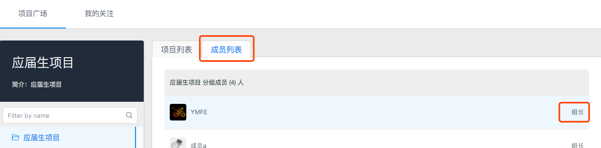
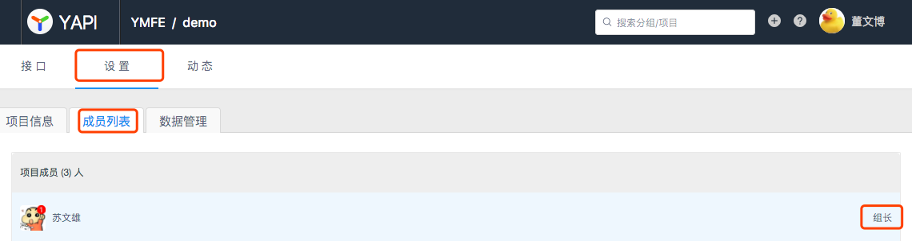

常见问题解答
本页面罗列了大家使用 YApi 时遇到的常见问题.
如果没有找到您要的答案，请联系管理员.
Q1 怎样联系组长？
组长分为 分组组长 和 项目组长:
- 分组组长：选择首页左侧的分组，点击右侧面板的
成员列表，成员右侧显示着组长/开发者的权限信息。  - 项目组长: 点击项目页的
设置-成员列表，成员右侧显示着组长/开发者的权限信息。 
Q2 怎么快速迁移旧项目？
第一步. 使用 Chrome 浏览器开发者工具录制功能
第二步 录制当前项目所有请求，导出到 har 文件
第三步 将Har数据导入到 YApi 平台
具体使用方法请参考 YApi 文档
Q3 忘记密码怎么办？
请联系 超级管理员 ，只有超级管理员能重置密码。
Q4 发现了 Bug 怎么办？
请反馈到 Github，功能性的问题我们会在一周内修复，并在每周一发布新的版本 Tag.
Q5 部署不成功怎么办？
- 确保 node 版本=> 7.6,请运行 node -v 查看版本号
- 确保 mongodb 版本 => 2.6，请运行 mongo --version 查看版本号
- 确保安装了 npm, 运行 npm -v 查看版本号
- 确保安装了 git,运行 git --version 查看版本号
确认版本号没问题，请删除原有的安装文件和数据库，重新安装。 如果还是无法安装，请不要选择最新的版本，可选择上一个版本或上上一个版本等，最新版本出问题的概率会比较大。